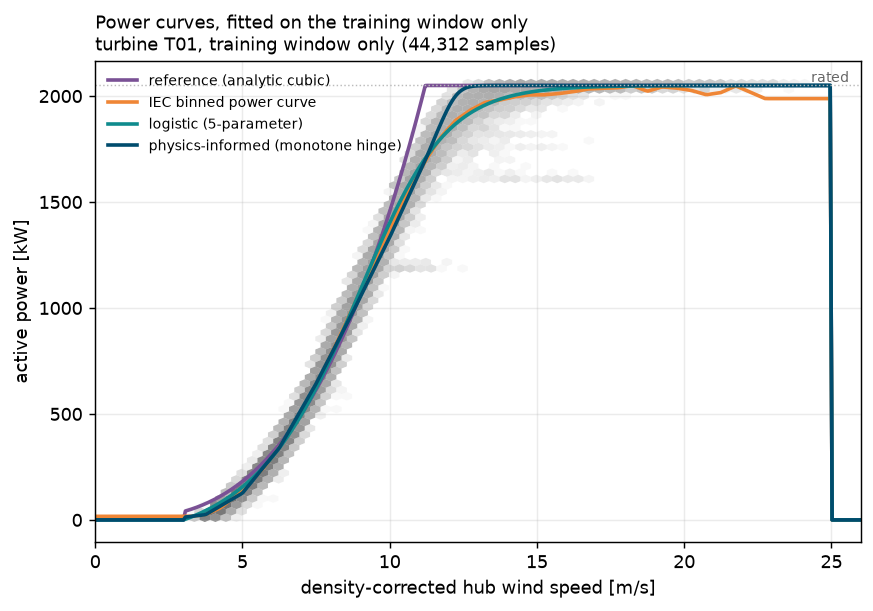
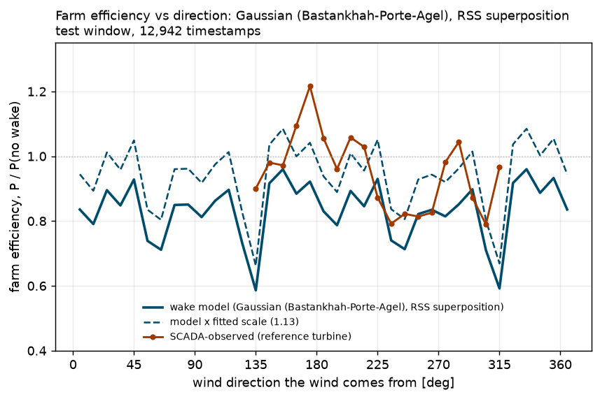
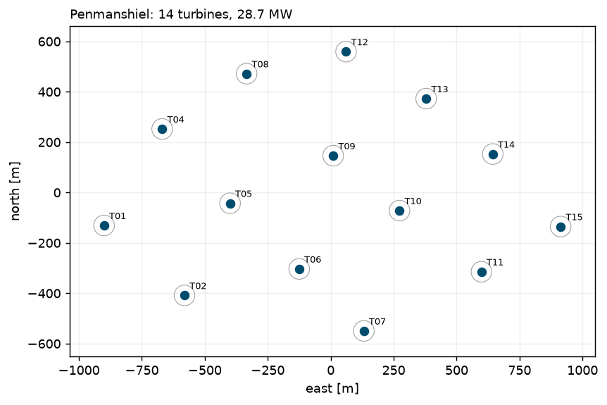
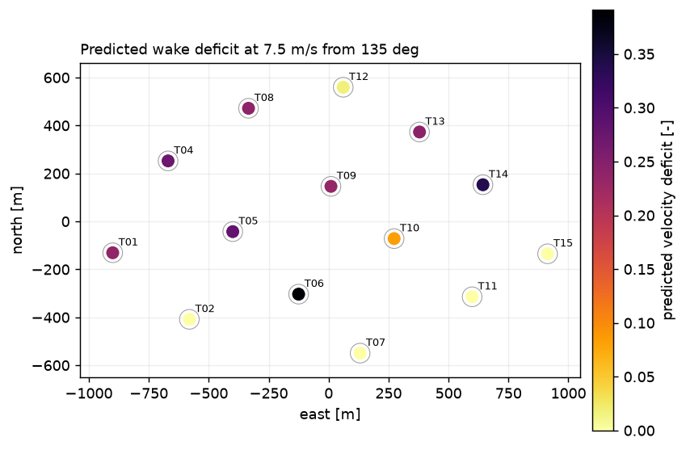

Penmanshiel, 14 Senvion MM82, 28.7 MW — 1.12 million 10-minute SCADA samples, public and licensed. What the models get right, what they cost, and where they stop.
Turbine scores: temporal holdout Sep–Dec 2017, 15,964 operating samples, nothing fitted on the test window. Wake scores: 96 sector × speed cells on the same window; the decay constant was fitted on Jul–Aug 2017 and scored here.
Five curves, fitted on 13 months, scored on a later 4 months. The last column re-measures four physical claims on the fitted curve rather than trusting the training.
| Model | RMSE kW | Energy error | Constraints met |
|---|---|---|---|
| Boosted trees (met features) | 45.3 | −0.1 % | 1 / 4 |
| IEC binned power curve | 46.6 | −0.6 % | 1 / 4 |
| Logistic, 5 parameters | 48.9 | −0.3 % | 4 / 4 |
| Physics-informed (monotone hinge) | 54.3 | +0.2 % | 4 / 4 |
| Operator's potential power | 57.1 | +2.2 % | measured |
| Analytic reference (Cp = 0.45) | 102.5 | +4.3 % | 4 / 4 |
The four constraints: power is never negative, never decreases with wind speed inside the operating window, never exceeds rated, and is zero below cut-in and above cut-out. The binned curve — the industry's definition of a power curve — fails three of them.

Farm efficiency from SCADA — metered power over what the machines would make wake-free — compared with the analytic wake models, sector by sector. The decay constant is the only thing fitted, on a separate window.
| Wake model | Modelled | Observed | Bias | RMSE |
|---|---|---|---|---|
| Gaussian, k* = 0.032 (textbook) | 0.818 | 0.936 | −11.8 pp | 0.185 |
| Gaussian, k* = 0.090 (fitted) | 0.906 | 0.936 | −3.0 pp | 0.126 |
| Jensen / PARK, k = 0.075 | 0.830 | 0.936 | −10.7 pp | 0.169 |

The correlation across sectors is only +0.17: the model does not reproduce the direction dependence, and its deepest predicted dip (135°, 0.59) is not the observed one. Whatever dominates the sector-to-sector variation — terrain, instrument calibration, sector management, real per-turbine performance — is not in the model. The observed efficiency is an upper bound on wake loss, not an independent measurement of it.


Jensen and the Gaussian wake are engineering models: depth-averaged momentum, self-similar profile, no terrain, no stability, no wake meandering, no yaw deflection.
The reference is a group of upwind turbines whose inflow is inferred from metered power. The observed efficiency absorbs curtailment, icing and real per-turbine differences.
The curtailment study assumes a thrust-coefficient multiplier stands in for yaw. At this spacing it finds no gain — and an earlier version that found 16 % was a modelling bug, now fixed.
The test window sits entirely inside the training envelope. It measures interpolation; the applicability map says where the model is not allowed to speak.
Fix the data scope with you, agree the reference-turbine and calibration procedure, and make this POC the benchmark row everyone measures against.
Estimate each machine's offset from the sectors where it is free-stream. This is the one change that turns the farm comparison from an upper bound into an estimate with an error bar — and it needs no new simulation.
The analytic wake field as the physics prior, a correction network trained against the calibrated efficiency, and a gate that refuses to answer outside the measured envelope. This is the PINN-shaped part, and where your interest in interaction and optimisation fits.
Deflection needs a yaw-aware wake model and a measured steering campaign. That is a field-test design, not a software task, and it is worth doing only once phases 1–3 can tell whether a gain is real.
| What | Where |
|---|---|
| Library | pinneapple_systems/wind |
| Guide and full result table | docs/guides/wind_power.md |
| Runnable case | examples/wind_farm_penmanshiel |
| Two notebooks, outputs committed | examples/wind_farm_penmanshiel/notebooks |
| 3D twin and demo film | outputs/twin/, outputs/wind_farm_demo.mp4 |
| Roadmap | docs/strategy/wind_collaboration_roadmap.md |
| Tests | tests/test_wind.py (29 tests) |
| Data | doi:10.5281/zenodo.16807304, CC-BY-4.0 |
Three minutes end to end on a laptop with the parse cache warm. The dataset is not shipped in the repository; the download commands are in the example's README.